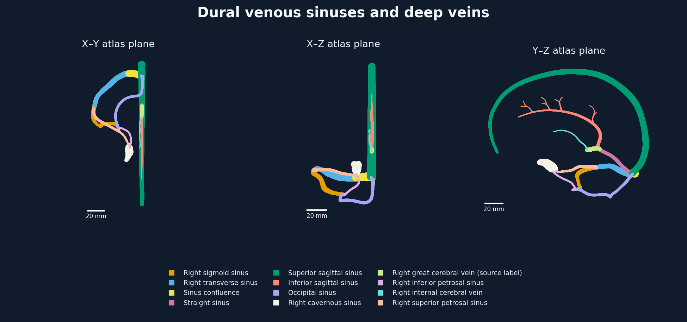

Return to Venous and CSF Imaging
Dural venous sinuses and deep veins
Compare twelve independently selectable source objects in their original atlas frame.
Verifying source objects…
Atlas projections

The archive supplies right-sided transverse, sigmoid, cavernous and petrosal objects. The atlas labels the great cerebral vein object “Right great cerebral vein”. The same file also occurs under the parent concept. Some source surfaces have open boundaries. Connections, left-sided counterparts, variants and patient-specific thrombus require separate evidence. Specialist review is pending.
Adapted from BodyParts3D 4.3, © Database Center for Life Science, under CC BY-SA 2.1 Japan. Primer repacked the geometry and added colour and interaction.